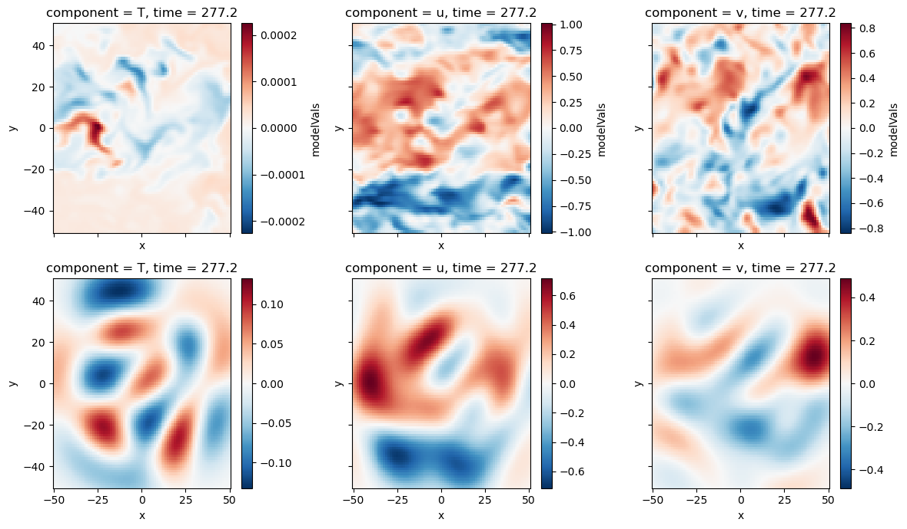

%load_ext autoreload
%autoreload 2
# hardware
import os
# analysis
import numpy as np
import xarray as xr
import pandas as pd
from scipy.integrate import simps
from scipy.interpolate import RegularGridInterpolator
# vis
import matplotlib.pyplot as plt
plt.style.use('seaborn-v0_8-deep')
# Acoustic tomography package
import atom
# configuration object
from hydra import initialize, compose
from hydra.utils import instantiate
with initialize(version_base=None, config_path="../../conf/"):
cfg = compose(config_name="configs",)
The autoreload extension is already loaded. To reload it, use:
%reload_ext autoreload
Virtual Acoustic Tomography Array#
One of the best ways for us to explore capabilities and limitations of the method is by creating a virual acoustic tomography array within a series of large-eddy simulations (LES). The virtual array comes with the unbelievable benefit of having a set of “ground truth” velocity and temperature fields that we can use as a basis for comparison of the AT retrievals.
This notebook goes through the workflow for loading LES data from an offline simulation and developing AT estimates of the flow fields.
### Array data
atarray = instantiate(cfg.atarray)
atarray.setupPathIntegrals()
constants = instantiate(cfg.constants)
# load LES data, estimate travel times
datapath = '/Users/nhamilt2/Documents/ATom/data/AT_array_sampling_z=9.5_6.66667Hz.nc'
les = atom.simulation.LESData(loadPath=datapath, atarray=atarray.ds, constants=constants)
les.calculate_travel_time()
# calculate fluctuating velocities
TFluc = les.ds.T - les.ds.TBulk
uFluc = les.ds.u - les.ds.uBulk
vFluc = les.ds.v - les.ds.vBulk
#downsample to match model grid
lesVals = xr.concat([TFluc, uFluc, vFluc], dim='component')
lesVals['component'] = ['T','u','v']
# lesVals = lesVals.sel(x=mg.ds.unstack().x, y=mg.ds.unstack().y, method='nearest')
lesVals = lesVals.stack(modelVar=['component','x','y'])
lesVals.name='modelVals'
Tfluc = lesVals.sel(component='T').unstack()
ufluc = lesVals.sel(component='u').unstack()
vfluc = lesVals.sel(component='v').unstack()
ls = atom.backgroundFlow.linearsystem.LinearSystem(
atarray=atarray.ds,
measuredTravelTime=les.ds.travelTimes.rename({'time':'frame'}),
constants=constants
)
ls.executeProcess()
Build the model grid#
This is the domain where the fluctuating fields of temperature and velocity are reconstructed. In this case, we are describing a grid that matches the LES sample domain exactly so that there is no need for interpolation or downsampling when comparing field estimates.
#Build model grid
mg = atom.fluctuatingField.ModelGrid(
nModelPointsX=len(lesVals.unstack().x),
nModelPointsY=len(lesVals.unstack().y),
modelLimsX=np.array([lesVals.x.values.min(), lesVals.x.values.max()]),
modelLimsY=np.array([lesVals.y.values.min(), lesVals.y.values.max()])
)
mg.buildModelGrid()
# Covariance Matrix object
cfg.covariancematrix['nFrames'] = 4
# cm = atom.fluctuatingField.CovarianceMatrices(
# cfg.covariancematrix,
# mg.getDataset(),
# atarray.ds,
# ls.ds,
# )
# cm.assembleTDSICovarianceMatrices()
# cm.to_pickle(f'../covarianceMatrices_nF={cfg.covariancematrix.nFrames}_example.pk')
cm = atom.fluctuatingField.CovarianceMatrices.from_pickle(f'../covarianceMatrices_nF={cfg.covariancematrix.nFrames}_example.pk')
tdsi = atom.fluctuatingField.TimeDependentStochasticInversion(
modelGrid=mg.ds,
atarray=atarray.ds,
covarMatrices=cm.ds,
bulkFlowData=ls.ds,
stencil=cm.stencil,
frameSets=cm.frameSets
)
tdsi.optimalStochasticInverseOperator()
tdsi.assembleDataVector()
tdsi.calculateFluctuatingFields()
Optimal data vector#
Our work so far indicates that interpolating and integrating fields along travel paths still produces some numerical error that interferes with the retrieval of fluctuating fields. To remove this numerical error, we calculate the optimal data vector \(\hat{\mathbf{d}}\) by mapping the LES data \(\mathbf{m}\) to the data space through the optimal stochastic inverse operator \(\mathbf{A}\).
The optimal data vector is then used as a direct replacement for the original, measured data vector to produce the optimal retrieval with the TDSI method.
tdsi.ds
<xarray.Dataset> Dimensions: (modelVar: 19683, pathID: 280, frame: 4002) Coordinates:
modelVar (modelVar) object MultiIndex
component (modelVar) object ‘T’ ‘T’ ‘T’ ‘T’ … ‘v’ ‘v’ ‘v’
modelXY (modelVar) object (-50.0, -50.0) … (50.0, 50.0)
pathID (pathID) object MultiIndex
tdsiFrame (pathID) int64 -2 -2 -2 -2 -2 -2 … 2 2 2 2 2 2
spk (pathID) int64 0 0 0 0 0 0 0 1 … 7 7 7 7 7 7 7
mic (pathID) int64 1 2 3 4 5 6 7 0 … 0 1 2 3 4 5 6
frame (frame) float64 0.0 0.15 0.3 … 600.0 600.1 Data variables: stochasticInverseOperator (modelVar, pathID) float64 -0.1048 … 1.596 dataVector (frame, pathID) float64 -17.74 -24.57 … -4.48 modelValues (modelVar, frame) float64 -186.2 -186.2 … 25.16
# estimate optimal data vector (map backward)
ATA = tdsi.ds.stochasticInverseOperator.T.values @ tdsi.ds.stochasticInverseOperator.values
optimalDataVector = np.linalg.pinv(ATA) @ (tdsi.ds.stochasticInverseOperator.values.T @ lesVals.values.T)
# estimate model state (map forward again)
retreival = tdsi.ds.stochasticInverseOperator.values @ optimalDataVector
coords = {
'component':['T','u','v'],
'x': mg.ds.unstack().x.values,
'y': mg.ds.unstack().y.values,
'time': tdsi.ds.frame.values,
}
retreival = xr.DataArray(data=retreival.reshape([ 3, 81, 81, 4002,]), coords=coords)
timeID = np.random.randint(4002)
time = retreival.time[timeID]
fig, ax = plt.subplots(2,3, figsize=(12,7), sharex=True, sharey=True)
for ic, comp in enumerate(retreival.component):
lesVals.unstack().sel(time=time, component=comp).T.plot(ax=ax[0,ic])
retreival.sel(time=time, component=comp).T.plot(ax=ax[1,ic])
fig.tight_layout()

The problem size can be greatly reduced by decreasing the number of points considered in the model grid.
mg.ds
<xarray.Dataset> Dimensions: (variable: 2, modelXY: 6561, x: 81, y: 81) Coordinates:
variable (variable) <U1 ‘x’ ‘y’
x (modelXY) float64 -50.0 -50.0 -50.0 -50.0 … 50.0 50.0 50.0 50.0
y (modelXY) float64 -50.0 -48.75 -47.5 -46.25 … 47.5 48.75 50.0
modelXY (modelXY) object MultiIndex Data variables: modelGrid (variable, x, y) float64 -50.0 -48.75 -47.5 … 50.0 50.0 50.0 Attributes: description: Model grid for TDSI solution unit: m nx: 81 ny: 81